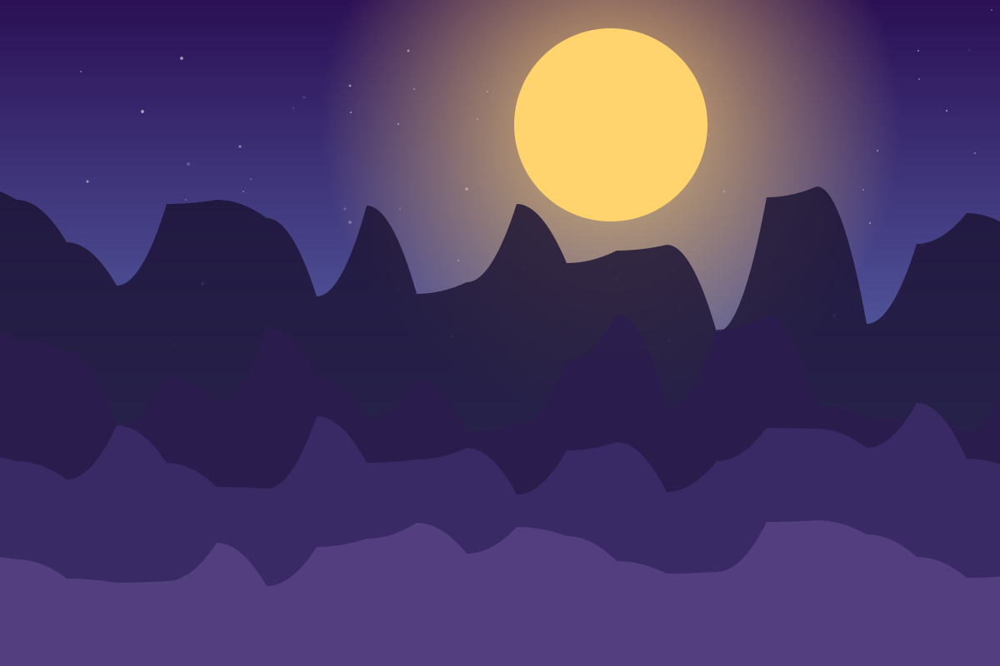
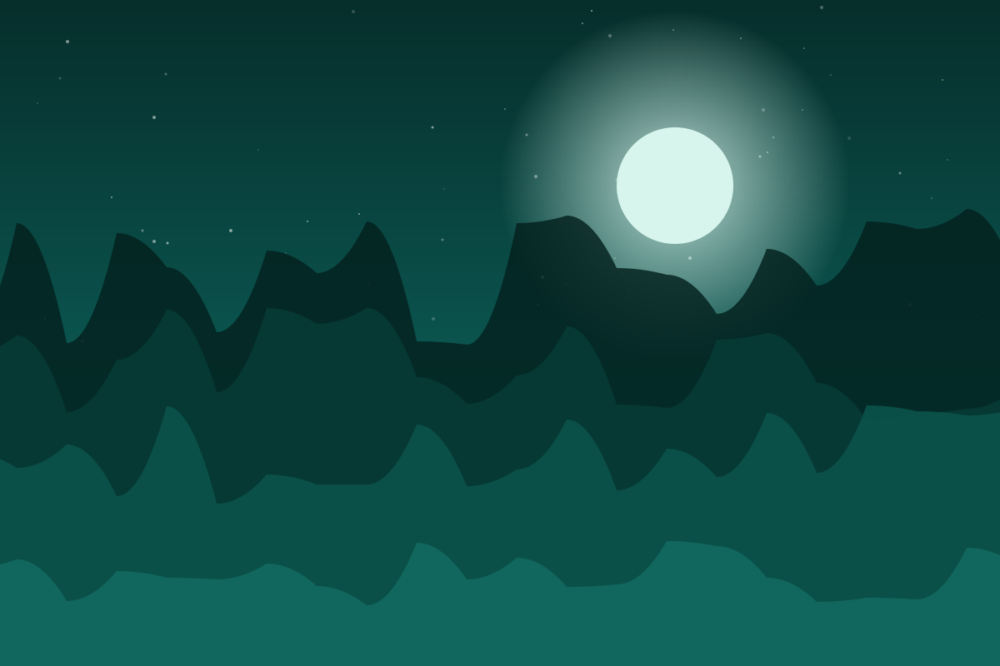
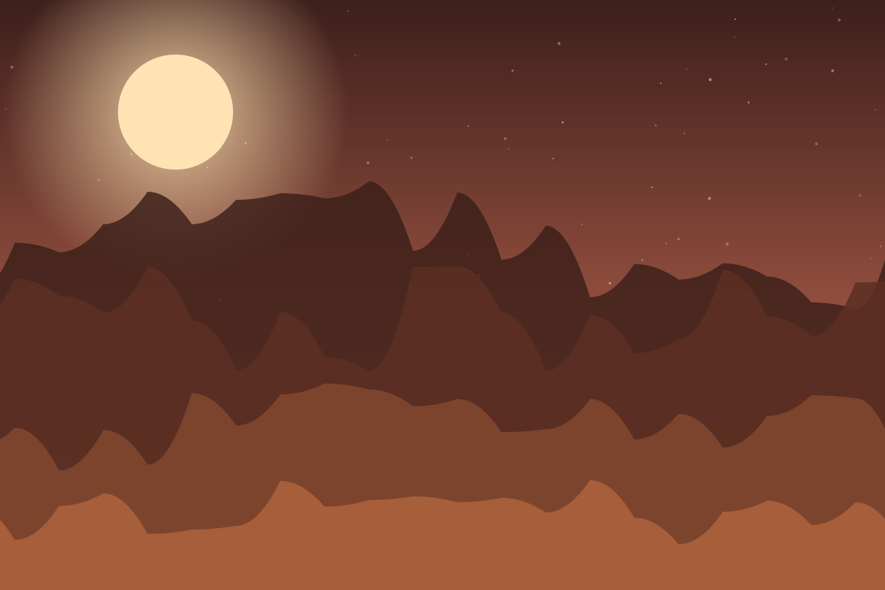
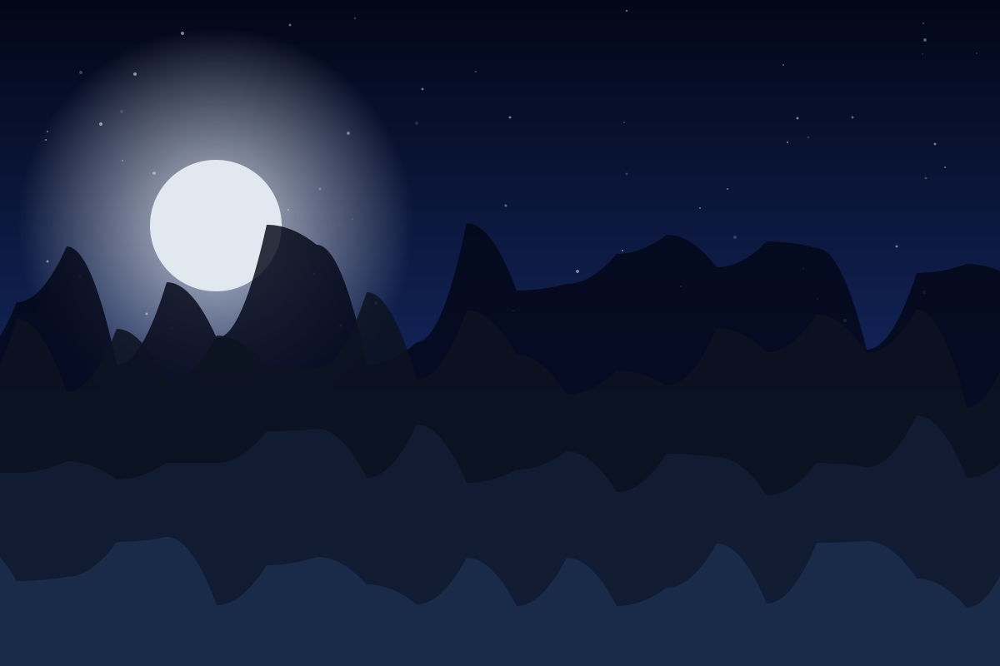
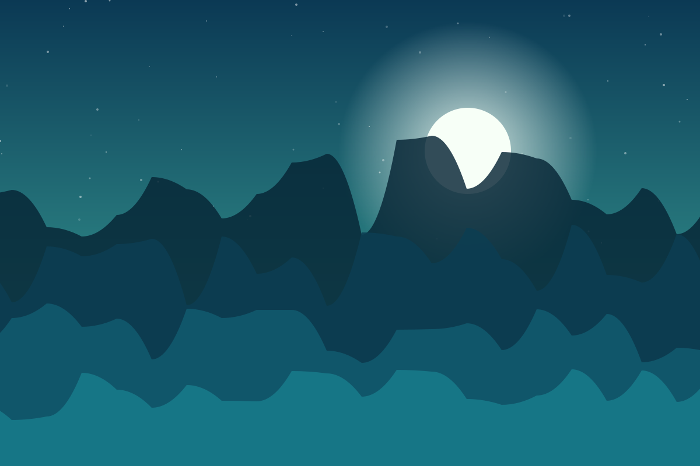
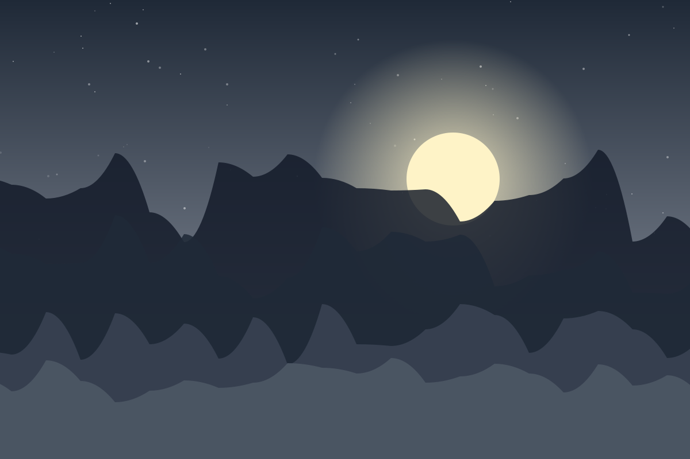

Galerie
Six variations sur le même motif : un ciel en dégradé, un astre, quatre lignes de relief. Ce sont des SVG — quelques kilo-octets chacun, nets à n'importe quelle taille.






Pourquoi du SVG
Une photo de 2 Mo met du temps à charger en 4G et pèse dans le dépôt. Ces illustrations font
environ 6 ko, restent parfaites sur un écran de téléphone comme en plein écran, et se modifient
dans un éditeur de texte. Les images hors du premier écran sont chargées en différé
(loading="lazy").